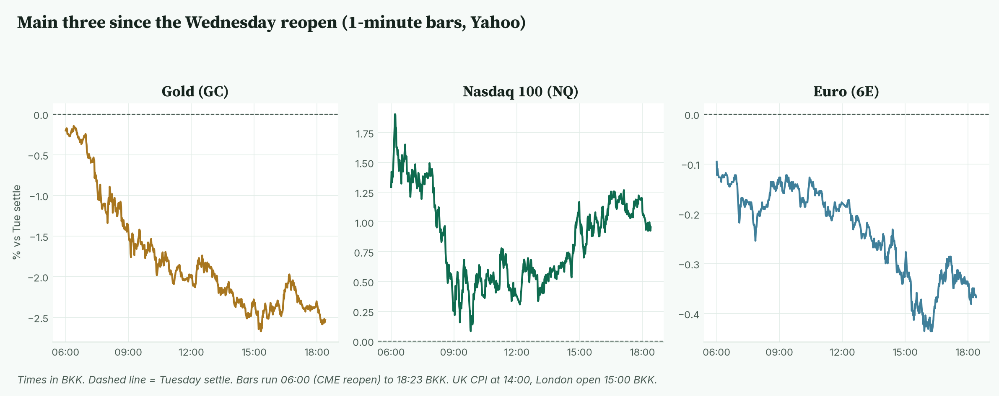
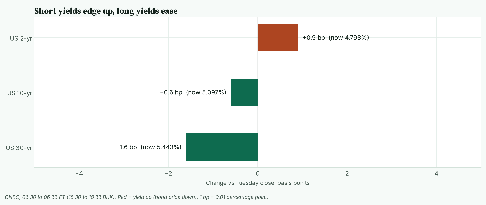
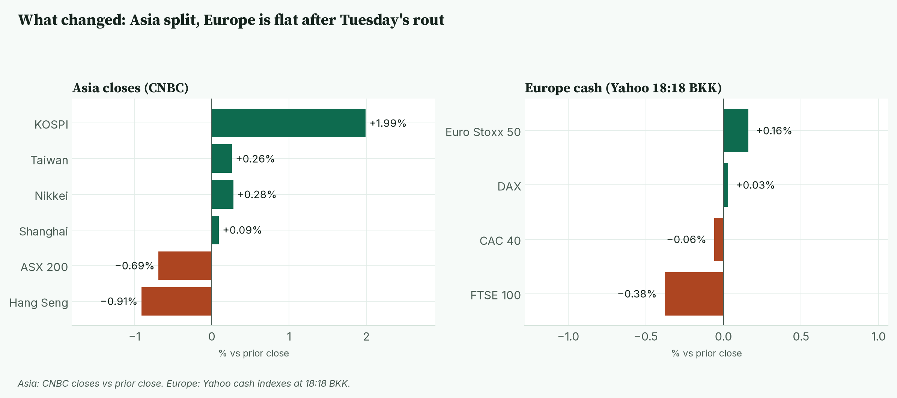
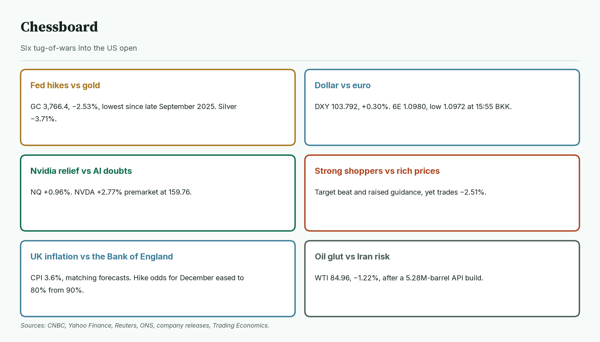
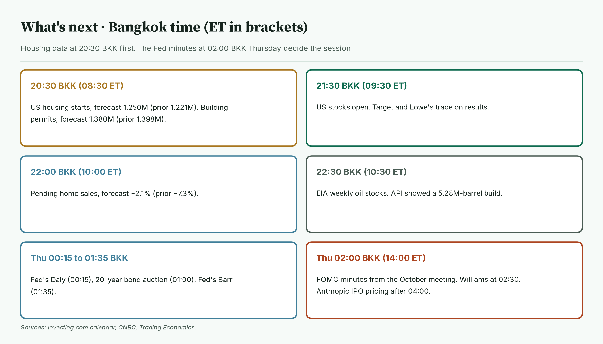
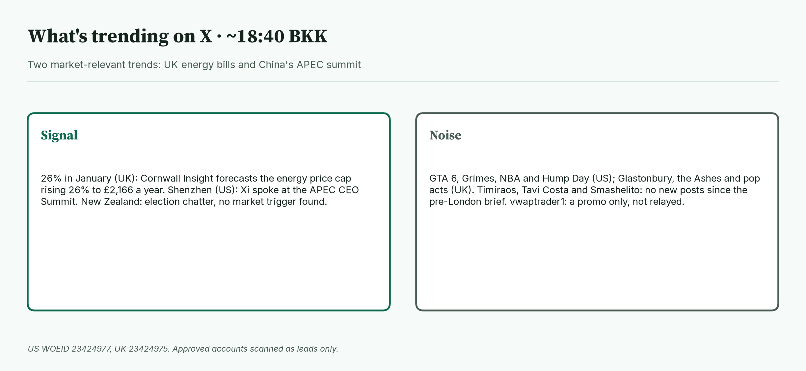

April · Market Intel, pre-NY · Wed Nov 18, 2026 · ~18:45 BKK / ~06:45 New York
Headline: Gold futures extended their slide to 3,766.4 (−2.53%), the lowest since late September 2025. Nasdaq futures are up at 27,336.25 (+0.96%) on Nvidia relief. Euro futures fell to 1.0980 (−0.37%). Housing data at 20:30 BKK comes first. The Fed minutes at 02:00 BKK Thursday decide the session.
So what: since London, the dollar kept climbing and gold kept falling. Tech is the only bright spot, and it rests on one company's results.
 Caption: Futures at 18:23 BKK versus Tuesday's settle. Gold is the big loser. The VIX is an indicative pre-open print.
Caption: Futures at 18:23 BKK versus Tuesday's settle. Gold is the big loser. The VIX is an indicative pre-open print.
1) Main instruments The three main contracts since the Wednesday reopen, as a % move from Tuesday's settle. Gold slid all day. The euro made its low after London opened. Nasdaq recovered most of its morning dip. |
 Caption: The three main contracts since the Wednesday reopen, as a % move from Tuesday's settle. Gold slid all day. The euro made its low after London opened. Nasdaq recovered most of its morning dip.
(Quotes are Yahoo Finance futures at 18:23 BKK (06:23 New York), matching CNBC. Session highs and lows use Yahoo 1-minute bars from the 06:00 BKK CME reopen (18:00 New York Tuesday). The first bar is 06:00 BKK.)
Caption: The three main contracts since the Wednesday reopen, as a % move from Tuesday's settle. Gold slid all day. The euro made its low after London opened. Nasdaq recovered most of its morning dip.
(Quotes are Yahoo Finance futures at 18:23 BKK (06:23 New York), matching CNBC. Session highs and lows use Yahoo 1-minute bars from the 06:00 BKK CME reopen (18:00 New York Tuesday). The first bar is 06:00 BKK.)
- Gold futures (GC, Dec): 3,766.4, −2.53%, at 18:23 BKK. Driver: a stronger dollar and bets on a December Fed hike (Reuters via Lianhe Zaobao, Investing.com). Tuesday's settle was 3,864.2. Today's range is 3,759.5 (15:21 BKK) to 3,859.3 (06:23 BKK). It is down from 3,793.9 at the pre-London brief. Spot gold is 3,765.97, −2.18% (CNBC, 18:33 BKK), near a 14-month low (Reuters).
- Nasdaq 100 futures (NQ, Dec): 27,336.25, +0.96%, at 18:23 BKK. Driver: relief after Nvidia's beat, with chip stocks up premarket (Yahoo). Tuesday's settle was 27,075.50. Today's range is 27,093.00 (09:48 BKK) to 27,605.25 (06:12 BKK). It is up from 27,259.25 at the pre-London brief.
- Euro futures (6E, Dec): 1.0980, −0.37%, at 18:23 BKK. Driver: the dollar firmed on Fed hike bets. Tuesday's settle was 1.10205. Today's range is 1.0972 (15:55 BKK) to 1.10135 (06:00 BKK). It broke the pre-London low of 1.09925.
- Takeaway: gold and the euro made new lows after London opened. Nasdaq is holding its Nvidia bounce.
Context. The dollar index (DXY, the dollar against six major currencies) is 103.792, +0.30% (CNBC, 18:33 BKK). The 10-year US yield (what the US government pays to borrow for 10 years) is 5.097%, down 0.6 basis points (CNBC, 18:33 BKK; a basis point is 0.01 percentage point). The VIX (the "fear gauge" built from S&P 500 option prices) is 24.10, −5.34% (CNBC, 18:33 BKK, an indicative pre-open print; Yahoo shows 24.02). US oil (CL, December) is 84.96, −1.22% (CNBC, 18:23 BKK). S&P 500 futures (ES) are 7,394.25, +0.48% (Yahoo, 18:23 BKK). Bitcoin is $64,118, +0.38% versus CNBC's previous close (CNBC/Coin Metrics, 18:33 BKK).
2) Premarket earnings and movers
- Chips lead the premarket. Prices are Yahoo premarket at 18:25 to 18:33 BKK.
- Nvidia +2.77% at 159.76. TSMC +3.24%, Micron +2.61%, Broadcom +2.37%, AMD +2.12%.
- Target beat but trades −2.51% at 155.52. Comparable sales (sales at stores open a year or more) rose 5.6% against 3.8% expected. Revenue was $27.07 billion against $26.56 billion expected. It raised its full-year earnings guidance to $10.65 to $11.40 a share (CNBC).
- Lowe's trades −1.21% at 217.79. Adjusted earnings per share were $3.10. Comparable sales rose 1.8%, and it updated its full-year outlook (company release).
- Mentor: a stock can fall on good news when the good news was already in the price. Target was up about 70% this year before the report (TradingKey via Startup Fortune).
- Takeaway: chips are bouncing, but retailers are being sold even on beats.
3) Rates, FX and oil Short yields edged up while long yields eased. Bond traders are waiting for the Fed minutes. |
 Caption: Short yields edged up while long yields eased. Bond traders are waiting for the Fed minutes.
Caption: Short yields edged up while long yields eased. Bond traders are waiting for the Fed minutes.
- CNBC, 18:30 to 18:33 BKK: 2-year 4.798% (+0.9 bp), 10-year 5.097% (−0.6 bp), 30-year 5.443% (−1.6 bp).
- Dollar. DXY is 103.792, up from 103.669 at the pre-London brief. EUR/USD is 1.0966 (CNBC, 18:33 BKK).
- Yen. USD/JPY is 159.31 (CNBC, 18:33 BKK), still just under 160.
- Oil. WTI (December) 84.96 and Brent (January) 92.59, −0.59% (CNBC, 18:23 BKK). CNBC's session ranges are WTI 83.58 to 85.95 and Brent 91.00 to 93.37.
- Why oil fell. The API survey showed US crude stocks up 5.28 million barrels last week, against a 0.5 million draw expected (Trading Economics, Jin10).
- Takeaway: the dollar is the main force today, and oil is heavy on supply.
4) Why it matters Asia split, with Korea strong and Hong Kong weak. Europe is flat after Tuesday's sell-off. |
 Caption: Asia split, with Korea strong and Hong Kong weak. Europe is flat after Tuesday's sell-off.
Caption: Asia split, with Korea strong and Hong Kong weak. Europe is flat after Tuesday's sell-off.
- Asia split: KOSPI +1.99%, Nikkei +0.28%, Taiwan +0.26%, Shanghai +0.09%, ASX 200 −0.69%, Hang Seng −0.91% (CNBC).
- Europe is flat. Euro Stoxx 50 +0.16%, DAX +0.03%, CAC 40 −0.06%, FTSE 100 −0.38% (Yahoo, 18:18 BKK).
- UK inflation rose to 3.6% in October, from 3.5%, matching the Reuters poll and below the Bank of England's 3.7% forecast (ONS, Reuters).
- Core and services inflation held steady. Markets cut the odds of a December Bank of England hike to 80% from 90% (Reuters).
- Mentor: gold pays no interest. When the dollar rises and rate hikes look likely, holding gold costs more, so it falls.
- Takeaway: New York opens with the dollar strong, gold weak and tech hopeful.
5) Chessboard Six tug-of-wars into the US open. The Fed and the dollar move the main three fastest. |
 Caption: Six tug-of-wars into the US open. The Fed and the dollar move the main three fastest.
Caption: Six tug-of-wars into the US open. The Fed and the dollar move the main three fastest.
- Fed hikes vs gold. GC 3,766.4, the lowest since late September 2025. Silver −3.71%.
- Dollar vs euro. DXY 103.792. 6E 1.0980, with a low of 1.0972 at 15:55 BKK.
- Nvidia relief vs AI doubts. NQ +0.96%. NVDA +2.77% premarket.
- Strong shoppers vs rich prices. Target beat and raised guidance, yet trades −2.51%.
- UK inflation vs the Bank of England. CPI 3.6%. December hike odds eased to 80%.
- Oil glut vs Iran risk. WTI 84.96 after a 5.28 million barrel API build.
- Takeaway: the board leans hawkish. The minutes are the next big test.
6) US data calendar (BKK times, ET in brackets) Housing data at 20:30 BKK is the first test. The Fed minutes at 02:00 BKK Thursday are the bigger one. |
 Caption: Housing data at 20:30 BKK is the first test. The Fed minutes at 02:00 BKK Thursday are the bigger one.
Caption: Housing data at 20:30 BKK is the first test. The Fed minutes at 02:00 BKK Thursday are the bigger one.
- 20:30 (8:30 AM ET): US October housing starts, forecast 1.250 million (prior 1.221 million). Building permits, forecast 1.380 million (prior 1.398 million) (Investing.com).
- 21:30 (9:30 AM ET): US stocks open.
- 22:00 (10:00 AM ET): pending home sales, forecast −2.1% (prior −7.3%) (Investing.com).
- 22:30 (10:30 AM ET): EIA weekly oil stocks (Investing.com).
- Thu 00:15 (12:15 PM ET): Fed's Daly. Thu 01:00: 20-year bond auction. Thu 01:35: Fed's Barr (Investing.com).
- Thu 02:00 (2:00 PM ET): FOMC minutes from the October meeting. Williams at 02:30 BKK (Investing.com). This is the session decider.
- Anthropic is expected to price its IPO after the US close, likely above its $70 to $78 range, with trading Thursday (CNBC, sources).
- Takeaway: hawkish minutes would push the dollar up and gold down further.
7) Scenarios and levels
- Hawkish minutes. The dollar rises. Watch GC 3,759.5, NQ 27,093.00 and 6E 1.0972 for breaks lower.
- Steady (the base case). Ranges likely hold. GC 3,759.5 to 3,859.3, NQ 27,093.00 to 27,605.25, 6E 1.0972 to 1.10135.
- Softer minutes. Gold and the euro could bounce toward the pre-London levels of 3,793.9 and 1.09975.
- These are possible paths, not forecasts.
8) Undercovered
- UK energy bills could jump 26% in January to £2,166 a year for a typical home, Cornwall Insight forecasts (Cornwall Insight, The Guardian). That would feed UK inflation next year.
- Silver is falling faster than gold. Silver futures are 45.60, −3.71% (CNBC, 18:23 BKK).
- Korea rallied while Hong Kong fell. KOSPI +1.99%, Hang Seng −0.91% (CNBC).
- Target plans to spend $5 billion to $6 billion on investment next year, up from about $3.8 billion this year (CNBC).
- Takeaway: energy costs are the next inflation risk outside the US.
9) What's trending on X (~18:40 BKK) Two trends carry market signal: UK energy bills and China's APEC summit. The rest is games, sport and pop. |
 Caption: Two trends carry market signal: UK energy bills and China's APEC summit. The rest is games, sport and pop.
Caption: Two trends carry market signal: UK energy bills and China's APEC summit. The rest is games, sport and pop.
- US: GTA 6, New Zealand, Shenzhen, Grimes.
- UK: 26% in January, Glastonbury, Lammy, Ashes.
- Signal: "26% in January" is the UK energy price cap forecast. "Shenzhen" follows Xi Jinping's speech at the APEC CEO Summit there (X News summary, a lead only).
- Approved accounts: Timiraos, Tavi Costa and Smashelito had no new posts since the pre-London brief. vwaptrader1 posted only a promo, not relayed.
- Noise: GTA 6, Grimes, NBA, Hump Day, Glastonbury, the Ashes and pop acts.
Bottom line: the dollar owns the tape, and gold is paying for it. For Jim: Nasdaq at 27,336.25 sits mid-range, 27,093.00 to 27,605.25. Gold at 3,766.4 sits near its 3,759.5 low. The euro at 1.0980 sits near its 1.0972 low. Interpretive note: housing at 20:30 BKK is the warm-up; the minutes at 02:00 BKK set the tone. 🔮 Interpretive, not data: Wednesday belongs to Mercury, the planet of messages. A fitting day for the Fed's minutes to do the talking. Symbol, not signal.
Confidence: Futures levels: high (Yahoo, matching CNBC). Session ranges: Yahoo 1-minute bars from the 06:00 BKK reopen. WTI and Brent levels and ranges: CNBC, because Yahoo's CL=F has rolled to January and its BZ=F is a different month. Yields, DXY, VIX, yen, Bitcoin, spot gold, silver and Asia: CNBC, time-stamped. VIX: indicative pre-open. Europe: Yahoo, 18:18 BKK. Premarket prices: Yahoo, 18:25 to 18:33 BKK. Target: CNBC. Lowe's: company release. UK CPI: ONS, Reuters. API stocks: Trading Economics, Jin10. Calendar: Investing.com. Anthropic: CNBC sources. Energy bills: Cornwall Insight, The Guardian. X posts and X News: leads only. Removed: TJX results (not confirmed by a primary source).
Charts: /workspace/april-charts/2026-11-18/pre-ny-{scoreboard,main3,rates,asia,chess,leading,xsplit}.png |